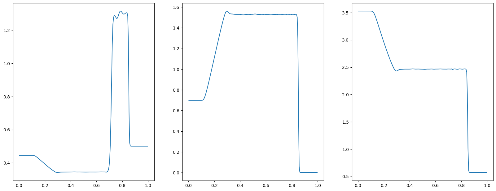

一维Lax激波管


本案例要求MindSpore版本 >= 2.0.0调用如下接口: mindspore.jit，mindspore.jit_class。
激波管问题是检验计算流体代码准确性的常见问题。这个案例为一个一维黎曼问题，即理想气体在左右端不同条件下的发展问题。
问题描述
Lax激波管问题的定义为:
\[\begin{split}\frac{\partial}{\partial t} \left(\begin{matrix} \rho \\ \rho u \\ E \\\end{matrix} \right) + \frac{\partial}{\partial x} \left(\begin{matrix} \rho u \\ \rho u^2 + p \\ u(E + p) \\\end{matrix} \right) = 0\end{split}\]
\[E = \frac{\rho}{\gamma - 1} + \frac{1}{2}\rho u^2\]
其中，对理想气体， \(\gamma = 1.4\) ，初始条件为：
\[\begin{split}\left(\begin{matrix} \rho \\ u \\ p \\\end{matrix}\right)_{x<0.5} = \left(\begin{matrix} 0.445 \\ 0.698 \\ 3.528 \\\end{matrix}\right), \quad
\left(\begin{matrix} \rho \\ u \\ p \\\end{matrix}\right)_{x>0.5} = \left(\begin{matrix} 0.5 \\ 0.0 \\ 0.571 \\\end{matrix}\right)\end{split}\]
在激波管两端，施加第二类边界条件。
本案例中src包可以在src下载。
[1]:
from mindspore import context
from mindflow import load_yaml_config, vis_1d
from mindflow import cfd
from mindflow.cfd.runtime import RunTime
from mindflow.cfd.simulator import Simulator
from src.ic import lax_ic_1d
context.set_context(device_target="GPU", device_id=3)
定义Simulator和RunTime
网格、材料、仿真时间、边界条件和数值方法的设置在文件numeric.yaml 中。
[2]:
config = load_yaml_config('numeric.yaml')
simulator = Simulator(config)
runtime = RunTime(config['runtime'], simulator.mesh_info, simulator.material)
初始条件
根据网格坐标确定初始条件。
[3]:
mesh_x, _, _ = simulator.mesh_info.mesh_xyz()
pri_var = lax_ic_1d(mesh_x)
con_var = cfd.cal_con_var(pri_var, simulator.material)
执行仿真
随时间推进执行仿真。
[4]:
while runtime.time_loop(pri_var):
pri_var = cfd.cal_pri_var(con_var, simulator.material)
runtime.compute_timestep(pri_var)
con_var = simulator.integration_step(con_var, runtime.timestep)
runtime.advance()
current time = 0.000000, time step = 0.001117
current time = 0.001117, time step = 0.001107
current time = 0.002224, time step = 0.001072
current time = 0.003296, time step = 0.001035
current time = 0.004332, time step = 0.001016
current time = 0.005348, time step = 0.001008
current time = 0.006356, time step = 0.000991
current time = 0.007347, time step = 0.000976
current time = 0.008324, time step = 0.000966
current time = 0.009290, time step = 0.000960
current time = 0.010250, time step = 0.000957
current time = 0.011207, time step = 0.000954
current time = 0.012161, time step = 0.000953
current time = 0.013113, time step = 0.000952
current time = 0.014066, time step = 0.000952
current time = 0.015017, time step = 0.000951
current time = 0.015969, time step = 0.000951
current time = 0.016920, time step = 0.000952
current time = 0.017872, time step = 0.000951
current time = 0.018823, time step = 0.000951
current time = 0.019775, time step = 0.000952
current time = 0.020726, time step = 0.000953
current time = 0.021679, time step = 0.000952
current time = 0.022631, time step = 0.000952
current time = 0.023583, time step = 0.000952
current time = 0.024535, time step = 0.000952
current time = 0.025488, time step = 0.000952
current time = 0.026440, time step = 0.000952
current time = 0.027392, time step = 0.000953
current time = 0.028345, time step = 0.000952
...
current time = 0.136983, time step = 0.000953
current time = 0.137936, time step = 0.000953
current time = 0.138889, time step = 0.000953
current time = 0.139843, time step = 0.000953
Post Processing
您可以对密度、压力、速度进行可视化。
[5]:
pri_var = cfd.cal_pri_var(con_var, simulator.material)
vis_1d(pri_var, 'lax.jpg')
